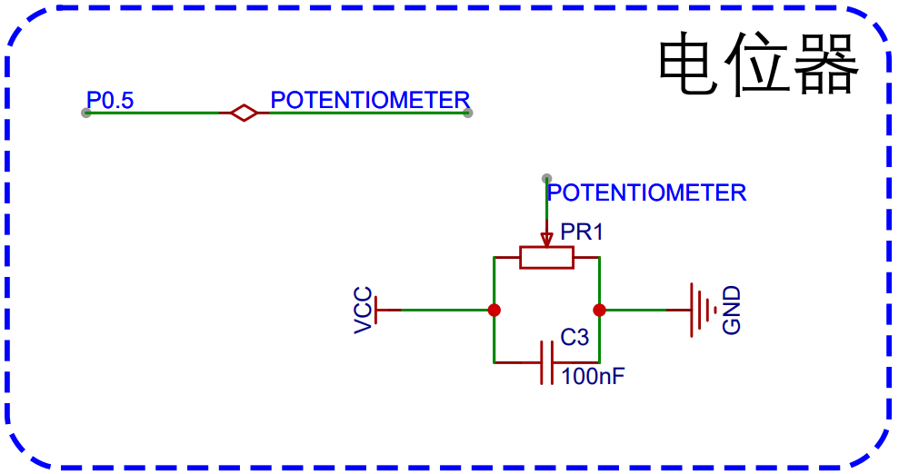
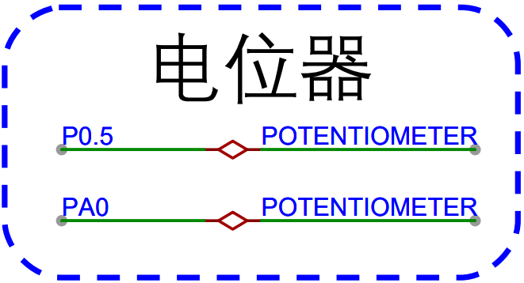
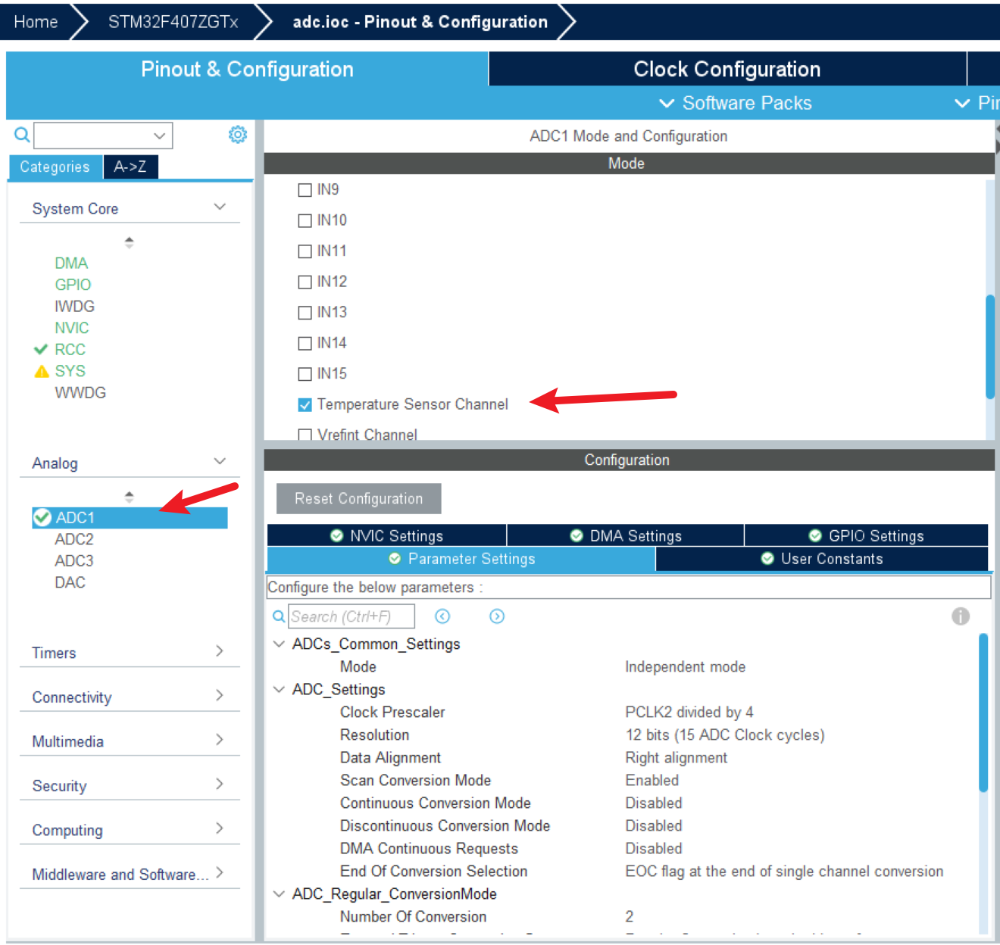
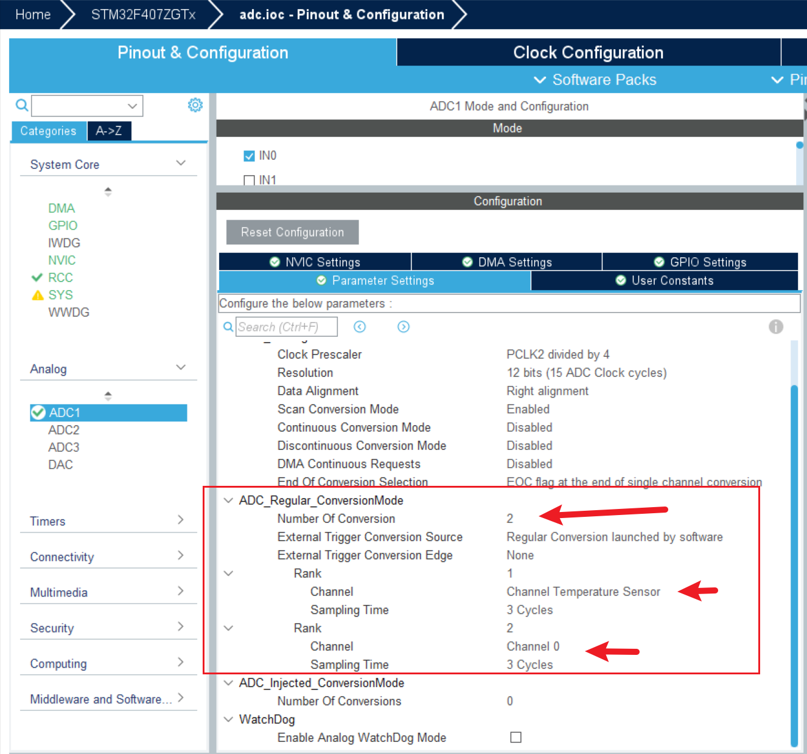

<!DOCTYPE lake>
<h2 data-lake-id="trXaq" id="trXaq"><span data-lake-id="ucec582cc" id="ucec582cc">学习目标</span></h2><ol list="uc2daaec9"><li data-lake-id="uf5f09f01" fid="ub3076963" id="uf5f09f01"><span data-lake-id="u31a9a7e4" id="u31a9a7e4">掌握ADC配置方式</span></li><li data-lake-id="ub875b642" fid="ub3076963" id="ub875b642"><span data-lake-id="u263a62d6" id="u263a62d6">掌握ADC采样数据操作</span></li></ol><h2 data-lake-id="xJPlf" id="xJPlf"><span data-lake-id="ue10d87c4" id="ue10d87c4">学习内容</span></h2><h2 data-lake-id="asjLA" id="asjLA"><span data-lake-id="ub40cba4b" id="ub40cba4b">需求</span></h2><p data-lake-id="ufa0f1511" id="ufa0f1511"><span data-lake-id="ua26507df" id="ua26507df">采样芯片温度和外部电位器电压。</span></p><p data-lake-id="ua43e154e" id="ua43e154e"></p><ul list="u60bdc734"><li data-lake-id="ua040168c" fid="u73837d91" id="ua040168c"><span data-lake-id="uc7960c56" id="uc7960c56">ADC0 IN0</span></li><li data-lake-id="ud4b0724b" fid="u73837d91" id="ud4b0724b"><span data-lake-id="ud5b3bc7f" id="ud5b3bc7f">ADC16 TEMP</span></li></ul><h3 data-lake-id="vN8Ci" id="vN8Ci"><span data-lake-id="uddc7473f" id="uddc7473f">ADC配置</span></h3><p data-lake-id="u39aad62f" id="u39aad62f"><span data-lake-id="u735b65f5" id="u735b65f5">选中ADC1，选中两个通道，IN16和IN0</span></p><p data-lake-id="u0d06f4b7" id="u0d06f4b7"></p><p data-lake-id="ua76d20d9" id="ua76d20d9"><span data-lake-id="u38d56368" id="u38d56368">配置采样序列数量为2.</span></p><p data-lake-id="u1a86b3cf" id="u1a86b3cf"></p><h3 data-lake-id="HwYYa" id="HwYYa"><span data-lake-id="uc6257678" id="uc6257678">ADC采样编码</span></h3><p data-lake-id="u106166cc" id="u106166cc"><span data-lake-id="u25fad83c" id="u25fad83c">开发流程：</span></p><ol list="u7276f0de"><li data-lake-id="u438d052f" fid="ufddcd64b" id="u438d052f"><span data-lake-id="u26c7c8e7" id="u26c7c8e7">开始采样</span></li><li data-lake-id="u41141e25" fid="ufddcd64b" id="u41141e25"><span data-lake-id="ua33270c0" id="ua33270c0">等待转换完成</span></li><li data-lake-id="u60adf244" fid="ufddcd64b" id="u60adf244"><span data-lake-id="uac29a5db" id="uac29a5db">按照序列顺序获取采样结果。</span></li></ol><p data-lake-id="u6413ec90" id="u6413ec90"><span data-lake-id="u1e4a9d39" id="u1e4a9d39">编码实现</span></p><span class="yuque-card-unsupported">[codeblock]</span><p data-lake-id="u4c98c92f" id="u4c98c92f"><br/></p><h2 data-lake-id="wulIH" id="wulIH"><span data-lake-id="ufa364962" id="ufa364962">练习题</span></h2><ol list="u24d95181"><li data-lake-id="u034f4863" fid="u78fab999" id="u034f4863"><span data-lake-id="u3ba840e4" id="u3ba840e4">使用ADC采样温度和电位器</span></li></ol>